This set explores uniform girl pencil through modern aesthetics and elegant tone under golden-hour glow. Compositions use close-up with urban backdrop, keeping focus clear and tidy. Details like retro styling and balanced colors make browsing easy.
Browse uniform images. Page 5 of curated uniform-style portrait collection.
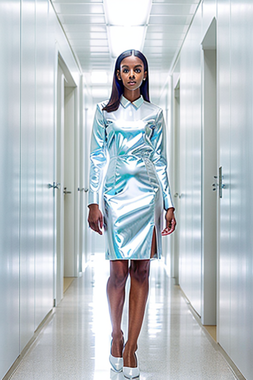 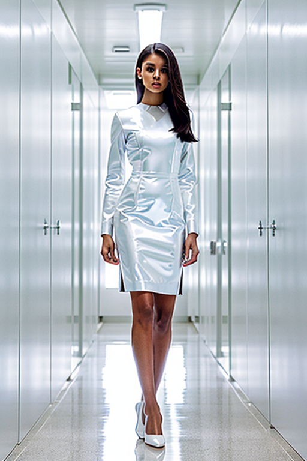 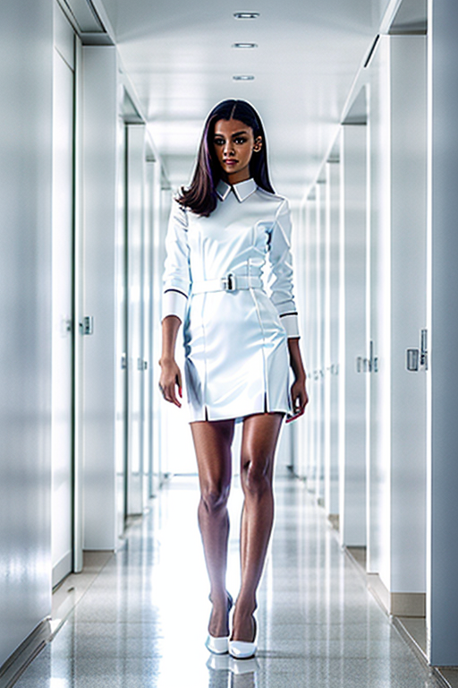 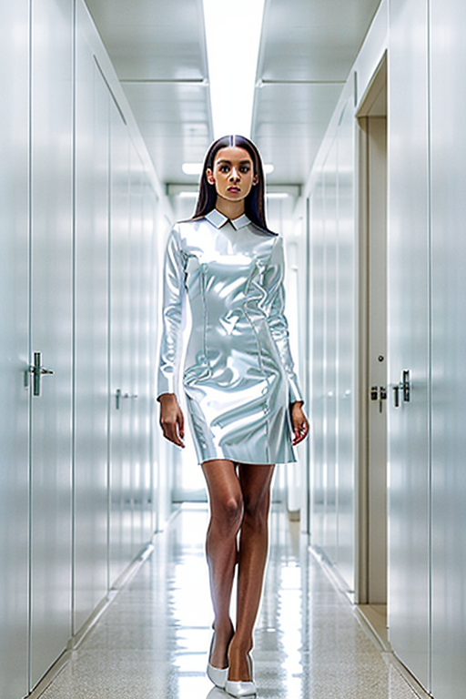 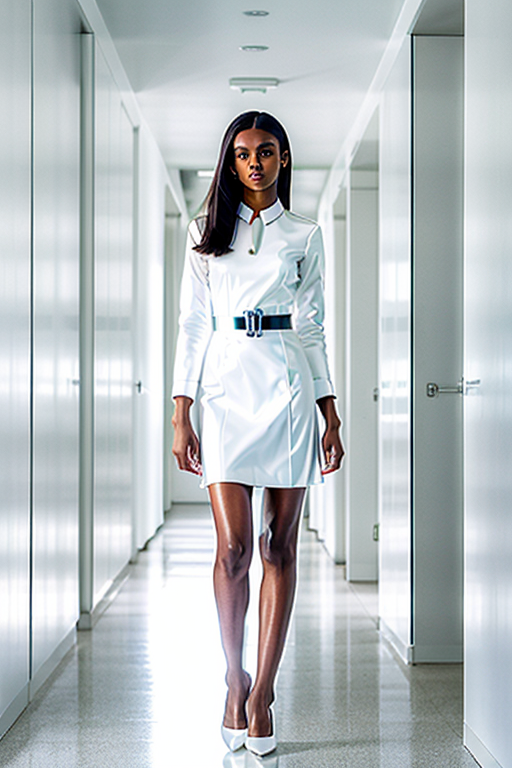

 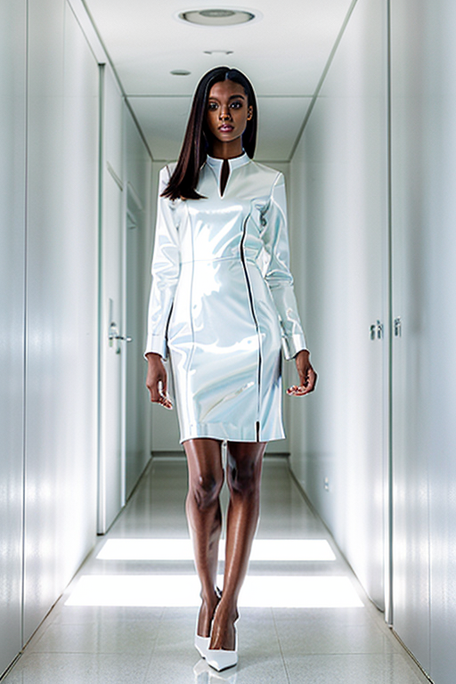
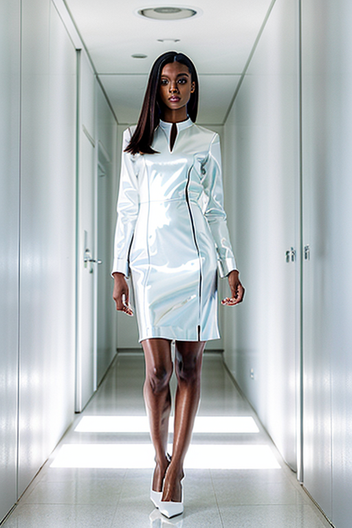
 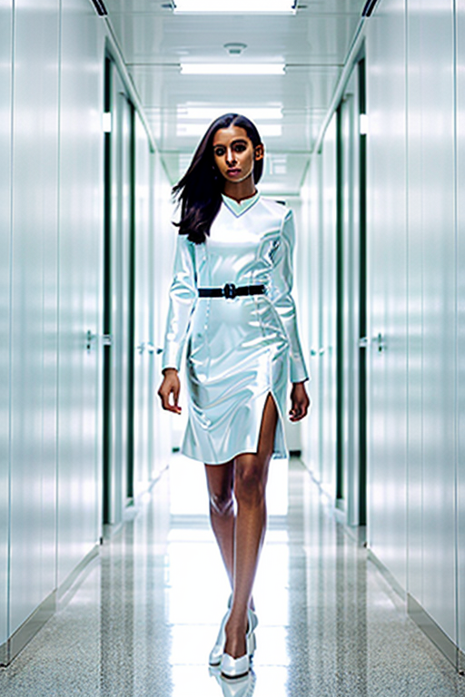
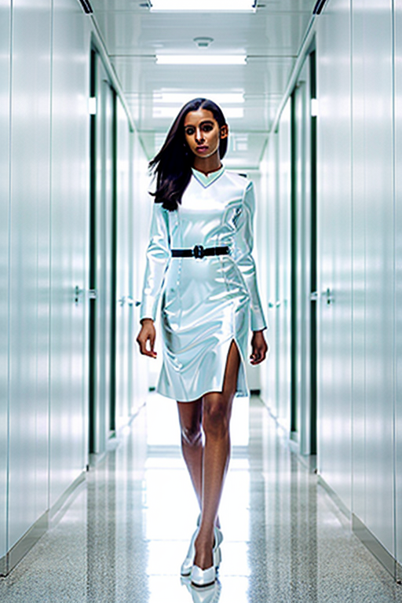

 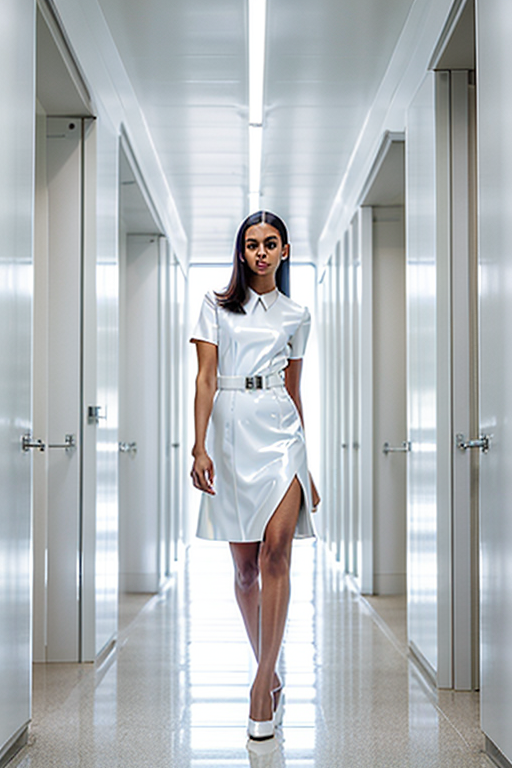
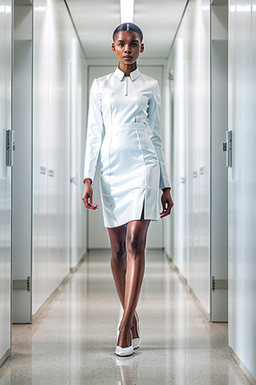
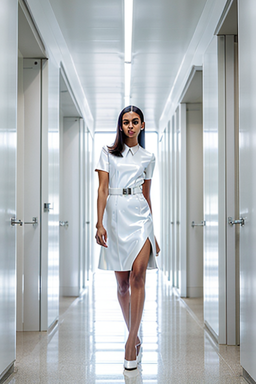
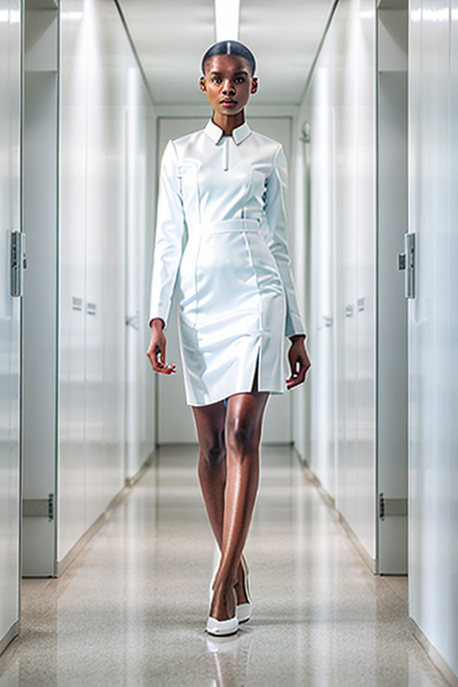


This page explores page5 with a practical focus on visual detail and browsing experience. Alt text and headings are optimized to make the content accessible and to provide consistent cues across the site. Subtle differences in wording help avoid duplication across similar pages. Internal navigation leads to related items with comparable tone or composition. This reduces bounce and supports exploration within the same theme. If you are comparing alternatives, keep an eye on subtle differences in framing, contrast, and color balance. The image aims to deliver a straightforward visual impression while keeping the file lightweight. A brief explanation clarifies the subject and lighting so visitors can quickly decide where to go next.